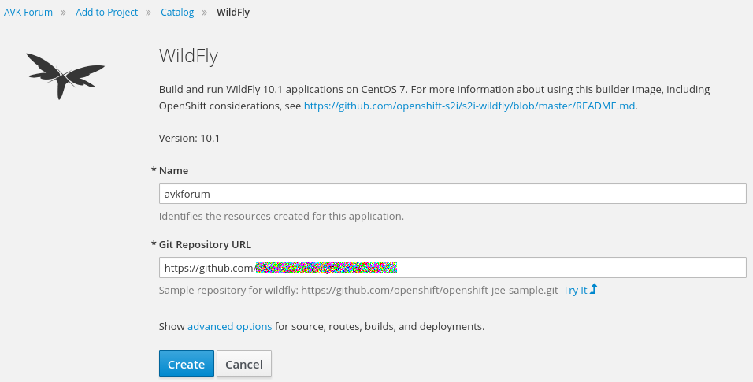
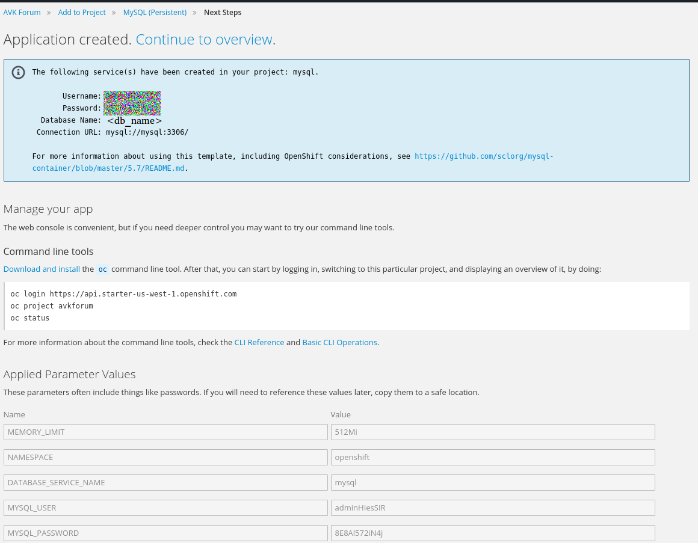

OpenShift (RedHat), a fast and (optionally) free of cost hosting solution.
Frustrating as it can be for developers, a lot of providers, that offer solutions for hosting your website, do not deliver the hosting for free. Except for OpenShift, which not so much delivers you an entirely free solution, but at least gives you enough space and CPU to test, develop and try out OpenShift before committing to pay for additional services. With a system they call cartridges, they offer fully pre-installed webservers to work with. So although it does not offer you full access to the webserver application itself (e.g. Tomcat or JBoss), it does save you the trouble of setting it up and managing it properly.
Prior to reading the article I expect you to have at least some knowledge of and experience with:
Before I start explaining the how-to, mind that this article's focus is on running a Java (EE)
webapplication on a Wildfly 10.1 server, with the java webapplication being developed in the Eclipse IDE.
Adding other languages (like Python) and webservers (like JBoss) will differ, sometimes slightly, and sometimes completely.
First create an account on OpenShift (no explanation necessary). Next, Login to the Openshift webconsole
You are free to choose any other port than 3300. The 3306 however is fixed. When you connect to this database from your tool,
In this document I described how to get started with OpenShift for your Java / Wildfly webapplication. Mind that this is the bare minimum of
things to do, but they are by far the most essential.
" width="50%" height=30%" style="border:1px solid black">
Click "Create Project"
In the next window, choose a name for your project, a display name, and a description.
" width="80%" height=40%" style="border:1px solid black">
In the next window, click on "Java".
" width="80%" height=40%" style="border:1px solid black">
In the next window, click on "Wildfly".
" width="80%" height=40%" style="border:1px solid black">
In the next window, select version 10.1 and click "Select".
" width="80%" height=40%" style="border:1px solid black">
In the next window, give this wildfly pod a unique name, and add the address to your webapplication on GitHub.
" width="80%" height=40%" style="border:1px solid black">
In the next window, copy the webhook on the right and add it to your github repository. .
" width="80%" height=40%" style="border:1px solid black">
Now add this webhook in your github repository. This will auto trigger a build when you make change in your repository.
" width="80%" height=40%" style="border:1px solid black">
Go back to the overview window. You will now see a live pod for your webapp.
" width="80%" height=40%" style="border:1px solid black">
In the top of this window, click "Add to project" and select "Browse Catalog"
" width="80%" height=40%" style="border:1px solid black">
Click on "Datastores"
" width="80%" height=40%" style="border:1px solid black">
Click on "MySQL (Persistent)"
" width="80%" height=40%" style="border:1px solid black">
When you have added all the info necessary (user, password, databasename), press "Create".
Important: Do NOT use the name "mysql" as your "Mysql database name". This is reserved for OpenShift and will fail building.
In the next window, remember to write down the username, password, and db_name for later use.
" width="80%" height=40%" style="border:1px solid black">
To configure your hibernate.cfg.xml with the correct reference to your MySQL db, in the next window click "Actions" and click "Edit YAML".
" width="80%" height=40%" style="border:1px solid black">
Now write down the "podIP"
" width="80%" height=40%" style="border:1px solid black">
From the overview, select the WebApp pod and click on "Add Storage to
" width="80%" height=40%" style="border:1px solid black">
Because we only created the one MySQL pod, it will automatically select it.
You can mount it to /
" width="80%" height=40%" style="border:1px solid black">
Last but not least, from the Overview go to "Applications" -> "Routes"
" width="80%" height=40%" style="border:1px solid black">
Technically, your website is already available using the (long) unique http address. But if you have bought a domain and want your
DNS cname to connect to this (long) address, you will have to add an additional route to your domain (in this case www.alvanklaveren.com),
so the route is allowed to openshift. Why is beyond me, but it works.
If you want to access the database using a SQL workbench/tool on your local machine, you will have to install the OC application of openshift.
In a couple of the screenshots in this document, you will see a reference to OC, to command-line connect to your openshift account.
What you need to do to access the database is:
oc login https://api.starter-us-west-1.openshift.com -u
use "localhost:3300", because the port-forward command just connected your port 3300 to port 3306 on your openshift MySQL pod.
Important: Login from your SQL tool as user 'root'. This way, you have full administrator rights !!
The password should be the same as the user password, unless you selected a different password for root when you created the MySQL pod.
Final words
The following tools and frameworks were used in this example:
Eclipse Mars, Wildfly 10.1, Java EE 7